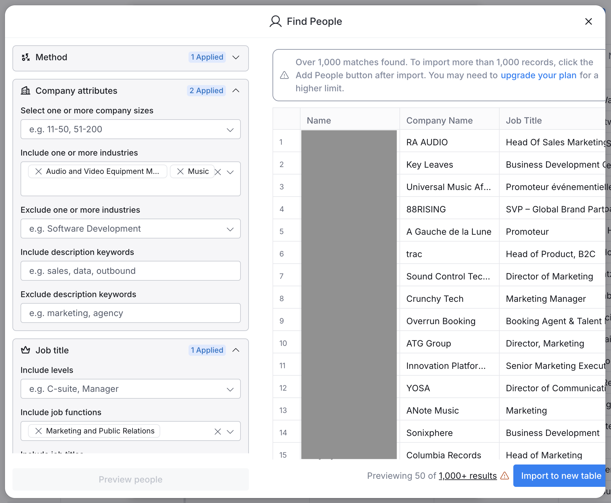
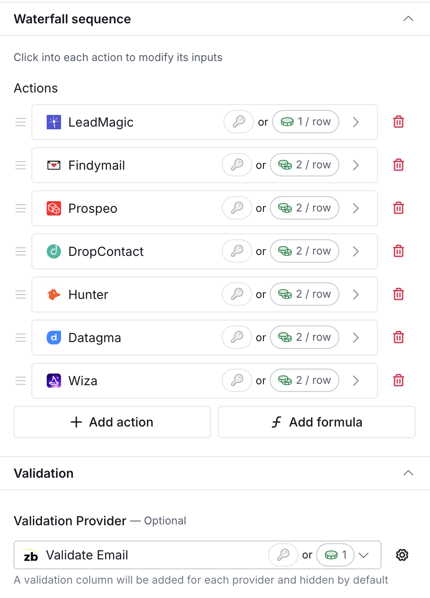
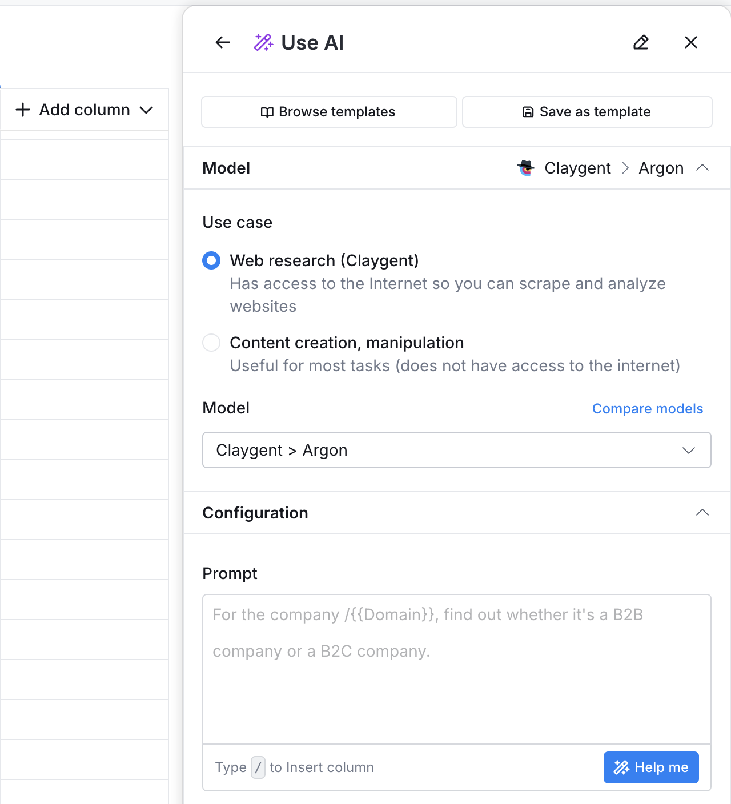

Using Clay for lead gen
We're doing lead gen for Flow State sponsorships, and Clay is really good.
Earlier this year they raised a "pre-emptive Series B expansion" at a $1.25B valuation. We decided to give it a shot.
The "people finder" tool was really intuitive and customizable:

There are two interesting things about Clay. First, and most interestingly, they use various datasources to maximize the chances of getting a working work email. Specifically, they use these seven providers by default:

We'd previously tried using hunter.io and it was good, but Clay is built on top of 100+ datasets, so you get the best of them all. It's a classic example of "commoditizing your complements."
Second, they have AI features integrated into the spreadsheet. So you can create a column that uses an LLM and a prompt to fill in its values. For example, you can create a column that searches the web for a company attribute like founding date, or what their latest product announcement was:

They're also pretty generous with their free trial. You can make multiple sheets and export 100 companies or people at a time.
They also have a lot of integrations and some built-in messaging functionality, but we have yet to try those out.
But yeah. Pretty good product!